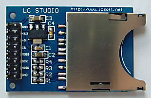
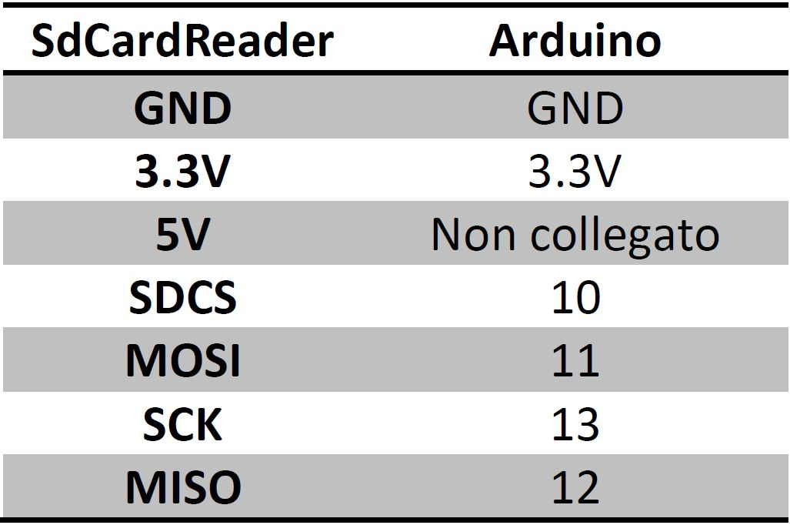

Questo SdCard Reader si interfaccia con il protocollo di comunicazione SPI. Grazie al regolatore di tensione interno è in grado di acquisire tensioni di alimentazione di 3.3V e 5V.


#include <SPI.h>
#include <SD.h>
Sd2Card card;
File myFile;
void setup() {
Serial.begin(9600);
while (!Serial);
while (!SD.begin(10)) Serial.println("initialization failed!");
Serial.println("initialization done.");
}
void loop() {
// Scrivere sul file:
scriviSD();
// Leggere il file:
leggiSD();
delay(1000);
}
void scriviSD(){
myFile = SD.open("test.txt", FILE_WRITE);
if (myFile) { // Se il file si è aperto
Serial.print("Scrivo sul file...");
myFile.println("aaaaa");
myFile.close();
Serial.println("Scritto.");
}
else Serial.println("Errore apertura file");
}
void leggiSD(){
myFile = SD.open("test.txt");
if (myFile) {
Serial.println("\nContenuto del file:");
while (myFile.available()) Serial.write(myFile.read());
myFile.close();
}
else Serial.println("Errore apertura file");
}